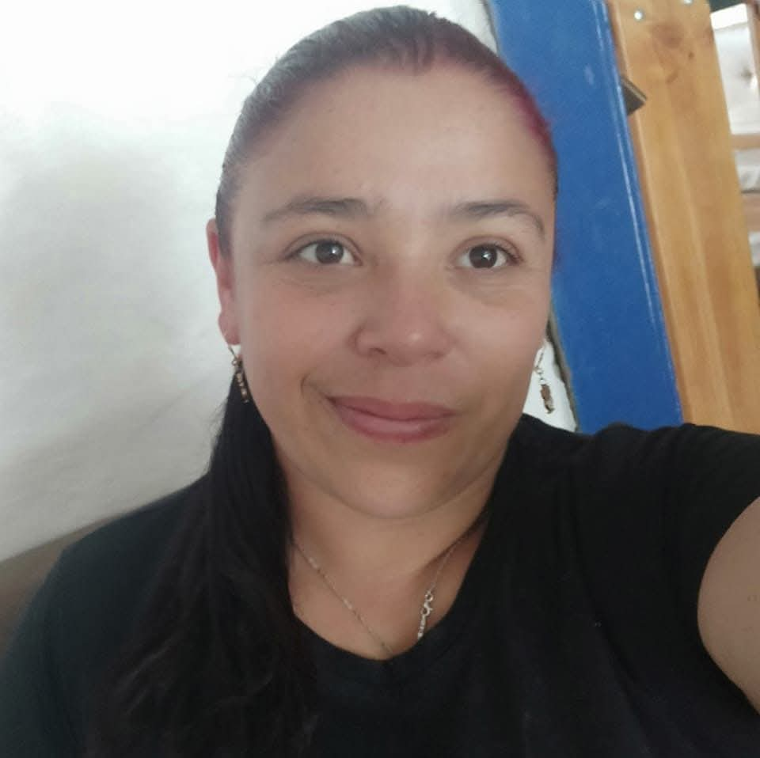
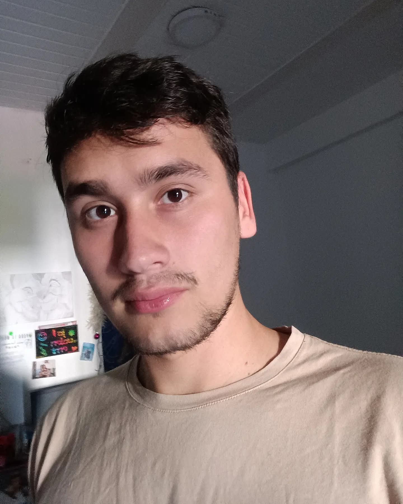

Jineth Andrea Montalvo Mesa
Estudiante de Licenciatura en Educación Infantil (UNAD). Asumo el rol de evaluadora, observando el proceso y aportando recomendaciones para fortalecer el trabajo colaborativo.
Recurso digital del curso Infancias: Historias y Perspectivas. Aquí presentamos nuestra construcción del contenido de “El lugar de las infancias”.
Conoce un poco del equipo.
Estudiante de Licenciatura en Educación Infantil (UNAD). Asumo el rol de evaluadora, observando el proceso y aportando recomendaciones para fortalecer el trabajo colaborativo.

Madre comunitaria en Salento y estudiante de Licenciatura en Educación Infantil (UNAD UDR La Tebaida). Soy perseverante y alegre. Como relatora, organizo y comunico para que el equipo avance con claridad.

Vivo en La Tebaida y soy estudiante UNAD. Me dedico al crochet y amigurumis, lo que potencia mi creatividad. Como veedora de autenticidad, cuido la originalidad y el cumplimiento de normas académicas.
Estudiante de Licenciatura en Educación Infantil (UNAD UDR La Tebaida). En el rol de utilera, organizo y dispongo recursos e información para facilitar el trabajo en equipo y el logro de objetivos.

Soy de Santa Rosa de Cabal, tengo 24 años y dos hijos. La carrera me ha ayudado a comprender el desarrollo infantil y a acompañar mejor a mis hijos. Como dinamizador, coordino tareas y aseguro el avance del grupo.
En este apartado encontrarás la información de cada escenario.
A continuación se presenta la evolución de los conceptos de niño-niña-niñez e infancia desde la Edad Antigua, Media y Moderna.
Haz clic para ampliar. Se abrirá ajustada a la pantalla con zoom y arrastre.
Referentes (según matriz): familia, autoridad paterna, jerarquías.
Referentes (según matriz): religión, familia, comunidad.
Referentes (según matriz): escuela, enfoque educativo, derechos.
Recurso de apoyo para comprender la evolución de los conceptos en las edades Antigua, Media y Moderna.
Si no se ve el video: Haz clic aquí.
Este espacio se desarrollará en el Escenario 3: Trayectos históricos.
Este espacio se desarrollará en el Escenario 4: Transformación de las realidades.
Este espacio se desarrollará en el Escenario 5: Desafíos para la acción.
Si quieres conocer un poco más, contáctanos.
Correo de contacto: nury@gmail.com
Curso: Infancias: Historias y Perspectivas